New attempt at VB
Matthew Stephens
2017-10-27
Last updated: 2017-11-18
Code version: b1b37ce
Outline
The model is: \[Y_i = \sum_{l=1}^L \sum_j X_{ij} \gamma_{lj} \beta_{lj} + e_i\]
\[(\gamma_{l1},\dots,\gamma_{lp}) \sim Multinomial(1,\pi)\] \[\beta_{lj} \sim g()\].
For now assume \(g\) is \(N(0,\sigma_\beta^2)\), and \(\pi = (1/p,\dots,1/p)\).
The idea is that there are \(L\) non-zero effects. (though see later comment.) For each of \(l=1,\dots,L\) we assume that exactly 1 of the \(p\) variables has an effect, as indicated by \(\gamma_{lj}\). \(\pi\) is a \(p\) vector of prior probabilities summing to 1.
\(g()\) is an effect distribution for the non-zero effects. \(g()\) could be a mixture of normals as in my ash work. \(g\) could include a point mass at 0, in which case \(L\) is an upper bound on the number of non-zero effects, rather than an actual number of effects. But I’m not sure we need to go this far… for now we assume \(g\) normal.
The idea is to seek a variational approximation (or expectation propogation?) based on \[q(\gamma,\beta) = \prod_l q(\gamma_l, \beta_l)\]
Possibly we would further factorize this to \(q(\gamma_l,\beta_l) = q(\gamma_l) q(\beta_l)\), although it might be \(q(\gamma_l) q(\beta_l | \gamma_l)\), I’m not sure.
However, cruicially, we do not factorize the \(q(\gamma_l)\) across the \(p\) elements of \(\gamma_l\): \(\gamma_l\) is a binary vector with exactly one non-zero element, so \(q(\gamma_l) = Multinimial(1, \alpha_l)\) say where \(\alpha_l=(\alpha_{l1,\dots,\alpha_lp})\) are variational parameters.
Here I have simply guessed at what the form of the variational updates might look like, by mimicking the updates from Carbonetto and Stephens. I borrowed and modified code from the function varbvsnormupdate from varbvs. Notice that we update all the variables simultaneously for each \(l\)… not one at a time. (This is a computational advantage of this approach, at least when coded in R.!)
In brief, the variational parameters are as in Carbonetto and Stephens, but they become \(L \times p\) matrices. That is they are \(\alpha,\mu,s\) where \(\alpha_{lj}\) is the posterior mean for \(\gamma_{lj}\), \(\mu_{lj}\) is the posterior mean on \(\beta_{lj}\), and \(s_{lj}\) is the posterior variance.
In the code below alpha[l,] mu[l,] is an estimate of \(\hat{\beta}[l,]\), and a sum of this over \(l\) is an estimate of the overall SNP effects. Call this sum r as in Carbonetto and Stephens. The variable Xr is t(X) %*% r, effectively the “fitted values”.
Lots to do: - derive these updates (or correct them!) and the VB lower bound. - investigate how it compares with exact calculations in small problems - think about how to deal with automatically choosing L or estimating g - hyperparameter estimation…
knitr::read_chunk("newVB.funcs.R")new_varbvsnormupdate <- function (X, sigma, sa, xy, d, alpha0, mu0, Xr0) {
# Get the number of samples (n) and variables (p).
n <- nrow(X)
p <- ncol(X)
L = nrow(alpha0) # alpha0 and mu0 must be L by p
pi = rep(1,p)
# Check input X.
if (!is.double(X) || !is.matrix(X))
stop("Input X must be a double-precision matrix")
# Check inputs sigma and sa.
if (length(sigma) != 1 | length(sa) != 1)
stop("Inputs sigma and sa must be scalars")
# Check input Xr0.
if (length(Xr0) != n)
stop("length(Xr0) must be equal to nrow(X)")
# Initialize storage for the results.
alpha <- alpha0
mu <- mu0
Xr <- Xr0
# Repeat for each effect to update
for (l in 1:L) {
# remove lth effect
Xr = Xr - X %*% (alpha[l,]*mu[l,])
# Compute the variational estimate of the posterior variance.
s <- sa*sigma/(sa*d + 1)
# Update the variational estimate of the posterior mean.
mu[l,] <- s/sigma * (xy - t(X) %*% Xr)
# Update the variational estimate of the posterior inclusion
# probability. This is basically prior (pi) times BF.
# The BF here comes from the normal approx - could be interesting
# to replace it with a t version that integrates over sigma?
alpha[l,] <- pi*exp((log(s/(sa*sigma)) + mu[l,]^2/s)/2)
alpha[l,] <- alpha[l,]/sum(alpha[l,])
# Update Xr by adding back in the $l$th effect
Xr <- Xr + X %*% (alpha[l,]*mu[l,])
}
return(list(alpha = alpha,mu = mu,Xr = Xr,s=s))
}
# Just repeated applies those updates
# X is an n by p matrix of genotypes
# Y a n vector of phenotypes
# sa the variance of the prior on effect sizes (actually $\beta \sim N(0,sa sigma)$ where the residual variance sigma here is fixed to the variance of Y based on a small effect assumption.)
fit = function(X,Y,sa=1,sigma=NULL,niter=100,L=5,calc_elbo=FALSE){
if(is.null(sigma)){
sigma=var(Y)
}
p =ncol(X)
xy = t(X) %*% Y
d = colSums(X * X)
alpha0= mu0 = matrix(0,nrow=L,ncol=p)
Xr0 = X %*% colSums(alpha0*mu0)
elbo = rep(NA,niter)
for(i in 1:niter){
res = new_varbvsnormupdate(X, sigma, sa, xy, d, alpha0, mu0, Xr0)
alpha0 = res$alpha
mu0 = res$mu
Xr0 = res$Xr
if(calc_elbo){
elbo[i] = elbo(X,Y,sigma,sa,mu0,alpha0)
}
}
return(c(res,list(elbo=elbo)))
}
#this is for scaled prior in which effect prior variance is sa * sigma
elbo = function(X,Y,sigma,sa,mu,alpha){
L = nrow(alpha)
n = nrow(X)
p = ncol(X)
Xr = (alpha*mu) %*% t(X)
Xrsum = colSums(Xr)
d = colSums(X*X)
s <- sa*sigma/(sa*d + 1)
postb2 = alpha * t(t(mu^2) + s)
Eloglik = -(n/2) * log(2*pi* sigma) -
(1/(2*sigma)) * sum(Y^2) +
(1/sigma) * sum(Y * Xrsum) -
(1/(2*sigma)) * sum(Xrsum^2) +
(1/(2*sigma)) * sum((Xr^2)) -
(1/(2*sigma)) * sum(d*t(postb2))
KL1 = sum(alpha * log(alpha/(1/p)))
KL2 = - 0.5* sum(t(alpha) * (1 + log(s)-log(sigma*sa)))
+ 0.5 * sum(postb2)/(sigma*sa)
return(Eloglik - KL1 - KL2)
}
# This computes the average lfsr across SNPs for each l, weighted by the
# posterior inclusion probability alpha
lfsr_fromfit = function(res){
pos_prob = pnorm(0,mean=t(res$mu),sd=sqrt(res$s))
neg_prob = 1-pos_prob
1-rowSums(res$alpha*t(pmax(pos_prob,neg_prob)))
}
#find how many variables in the 95% CI
# x is a probability vector
n_in_CI_x = function(x){
sum(cumsum(sort(x,decreasing = TRUE))<0.95)+1
}
# return binary vector indicating if each point is in CI
# x is a probability vector
in_CI_x = function(x){
n = n_in_CI_x(x)
o = order(x,decreasing=TRUE)
result = rep(0,length(x))
result[o[1:n]] = 1
return(result)
}
# Return binary matrix indicating which variables are in CI of each
# of effect
in_CI = function(res){
t(apply(res$alpha,1,in_CI_x))
}
n_in_CI = function(res){
apply(res$alpha,1,n_in_CI_x)
}
# computes z score for association between each
# column of X and y
calc_z = function(X,y){
z = rep(0,ncol(X))
for(i in 1:ncol(X)){
z[i] = summary(lm(y ~ X[,i]))$coeff[2,3]
}
return(z)
}
# plot p values of data and color in the 95% CIs
# for simulated data, specify b = true effects (highlights in red)
pplot = function(X,y,res,pos=NULL,b=NULL,CImax = 400,...){
z = calc_z(X,y)
zneg = -abs(z)
logp = log10(pnorm(zneg))
if(is.null(b)){b = rep(0,ncol(X))}
if(is.null(pos)){pos = 1:ncol(X)}
plot(pos,-logp,col="grey",xlab="",ylab="-log10(p)",...)
points(pos[b!=0],-logp[b!=0],col=2,pch=16)
for(i in 1:nrow(res$alpha)){
if(n_in_CI(res)[i]<CImax)
points(pos[which(in_CI(res)[i,]>0)],-logp[which(in_CI(res)[i,]>0)],col=i+2)
}
}Null simulation
This is a null simulation. Actually I don’t understand why it converges to this result where all the posteriors are the same for each \(l\). Might be interesting to understand.
set.seed(1)
n = 1000
p = 1000
y = rnorm(n)
X = matrix(rnorm(n*p),nrow=n,ncol=p)
res =fit(X,y,niter=100,calc_elbo=TRUE)
n_in_CI(res)[1] 889 889 889 889 889lfsr_fromfit(res)[1] 0.1461692 0.1461692 0.1461692 0.1461692 0.1461692pplot(X,y,res,main="null simulation")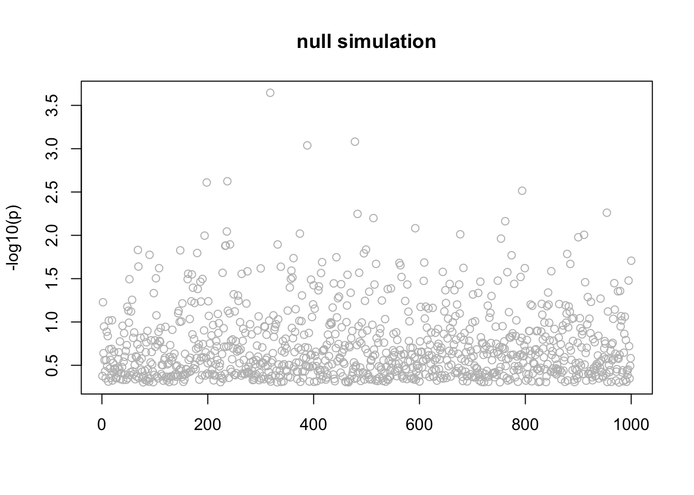
Note that the ELBO is increasing
plot(res$elbo)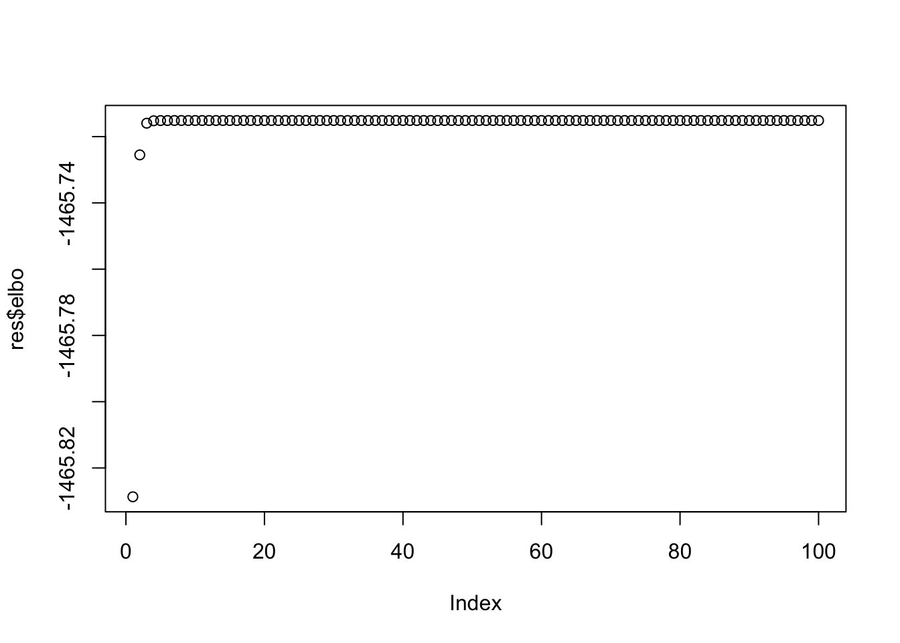
Simple Simulation
Here the first 4 variables are actually real… just a sanity check!
n = 1000
p = 1000
beta = rep(0,p)
beta[1] = 1
beta[2] = 1
beta[3] = 1
beta[4] = 1
X = matrix(rnorm(n*p),nrow=n,ncol=p)
y = X %*% beta + rnorm(n)
res =fit(X,y,niter=100,calc_elbo=TRUE)
n_in_CI(res)[1] 1 1 1 1 943lfsr_fromfit(res)[1] 0.000000 0.000000 0.000000 0.000000 0.356592pplot(X,y,res,main="simple simulation")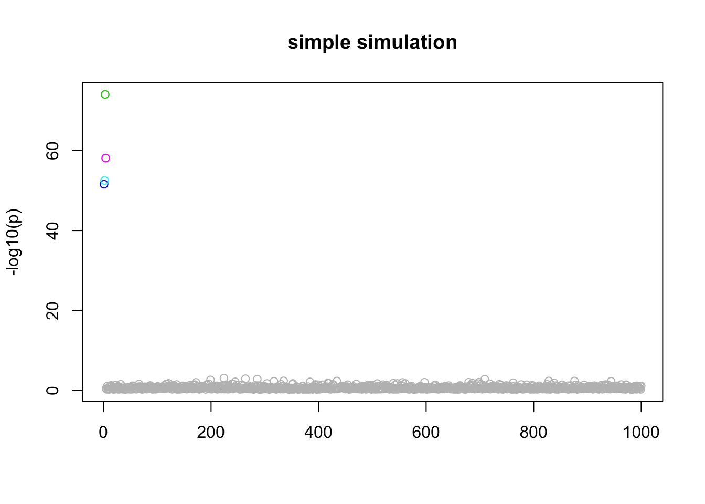
plot(res$elbo,main="ELBO is increasing")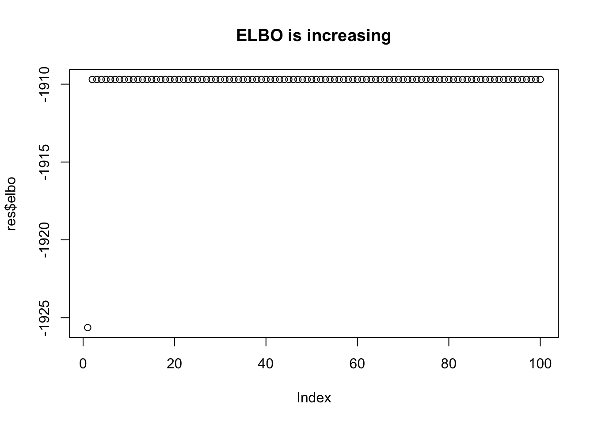
Simulate with LD blocks
We will simulate data with some “LD structure”. b=3 blocks of p=10 variables, each correlated through some latent Z. The phenotype model is \(Y = X_1+...+X_b + e\) where \(X_1,\dots,X_b\) are each a member of a block, and \(e\) is \(N(0,sd)\).
set.seed(1)
simulate = function(n=100,p=10,b=3,sd=1){
Z = list()
X = list()
Y = list()
for(i in 1:b) Z[[i]] = rnorm(n)
for(i in 1:b) X[[i]] = Z[[i]] + matrix(rnorm(n*p),nrow=n)
for(i in 1:b) Y[[i]] = X[[i]][,1]
X = do.call(cbind,X) # bind columns of X and Y
Y = do.call(cbind,Y)
Y = rowSums(Y) # each of the betas is 1
Y = Y + rnorm(n,sd = sd)
return(list(X=X,Y=Y))
}
d = simulate()Now fit the model:
res.LD =fit(d$X,d$Y,niter=100)
n_in_CI(res.LD)[1] 1 1 1 29 29lfsr_fromfit(res.LD)[1] 2.925933e-06 1.575560e-06 2.550389e-04 3.442160e-01 3.442160e-01pplot(d$X,d$Y,res.LD,main="LD simulation",CImax=10)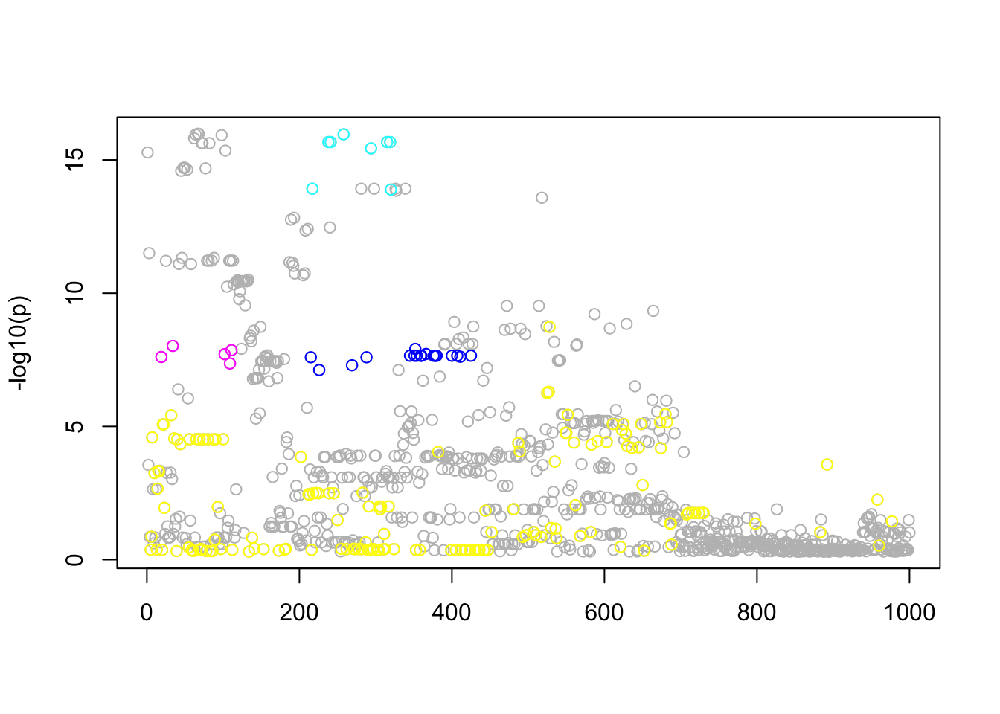
Real data
These are GTEX data from Thyroid.
d=readRDS("../data/Thyroid.FMO2.pm1Mb.RDS")
storage.mode(d$X) <- "double"
d$X <- d$X[,3501:4500]
pos <- d$pos[3501:4500]
X = d$X
y = d$y
Z = d$Z
Xresid= X
p =ncol(Xresid)
for(i in 1:p){Xresid[,i] = lm(X[,i]~Z)$resid}
yresid = lm(y~Z)$resid
res.gtex =fit(Xresid,yresid,niter=100,calc_elbo=TRUE)
n_in_CI(res.gtex)[1] 840 19 8 5 152lfsr_fromfit(res.gtex)[1] 2.281823e-01 1.483460e-09 2.220446e-16 1.166622e-12 1.318208e-02pplot(Xresid,yresid,res.gtex)
plot(res.gtex$elbo,main="ELBO is increasing")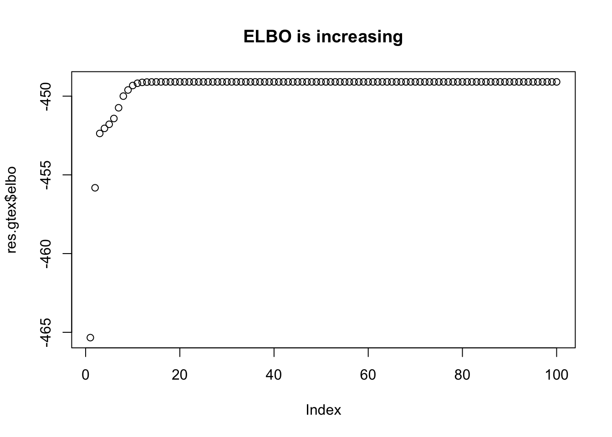
Interestingly, the variable with smallest \(p\) value is not in the CIs of the most confident eQTLs. It seems that when we control for the other hits, that variable is no longer that significant.
Notice that only \(l=2,\dots,5\) have small lfsr. So the first one can probably be ignored. Of the others, there are 3 eQTLs that are fairly well mapped (95% CI contains 5-19 SNPs) and one that is not all well mapped (152).
Here we pick out the top marker for each \(L\) and look at the BFs. Also compare with the top markers found by varbvs. We see the BF for the top 4 markers is higher than those from varbvs, which is encouraging.
#find top hits
tophits = apply(res.gtex$alpha,1,which.max)
markers = colnames(Xresid)[tophits]
# varbvs, top 4 SNPs:
markers.varbvs<- c("chr1_171168633_C_A_b38",
"chr1_171147265_C_A_b38",
"chr1_171164750_C_A_b38",
"chr1_171178589_C_T_b38")
#simple bf calculation X an n by p matrix of genoytpes
log10BF = function(X,y,sigmaa){
p = ncol(X)
n = nrow(X)
X = cbind(rep(1,n),X)
invnu = diag(c(0,rep(1/sigmaa^2,p)))
invOmega = invnu + t(X) %*% X
B = solve(invOmega, t(X) %*% cbind(y))
invOmega0 = n
return(-0.5*log10(det(invOmega)) + 0.5*log10(invOmega0) - p*log10(sigmaa) -(n/2) * (log10( t(y- X %*% B) %*% y) - log10(t(y) %*% y - n*mean(y)^2) ))
}
c(log10BF(Xresid[,markers], yresid,0.5),
log10BF(Xresid[,markers[2:5]], yresid,0.5),
log10BF(Xresid[,markers[2:4]], yresid,0.5),
log10BF(Xresid[,markers.varbvs], yresid,0.5))[1] 36.41482 35.41237 31.07575 33.70173Simulations based on real data
Here we take the real genotypes (actually the residuals after removing Z) from the data above, and simulate effects with the effect sizes matched to the 4 significant top SNPs identified above.
set.seed(1)
p =ncol(Xresid)
n = nrow(Xresid)
b = rep(0,p)
index = apply(res.gtex$alpha,1,which.max)[-1]
b[index] = diag(res.gtex$mu[2:5,index])
fitted = Xresid %*% b
sigma = sqrt(var(yresid) - var(fitted))
ysim = fitted + rnorm(n, 0, sigma)
write_finemap_files = function(X,Y,dir,prefix){
dir = normalizePath(dir)
z = calc_z(X,Y)
n = length(Y)
write.table(z,file.path(dir,paste0(prefix,".z")),quote=F,col.names=F)
write.table(cor(Xresid),file.path(dir,paste0(prefix,".ld")),quote=F,col.names=F,row.names=FALSE)
write.table(t(c(0,0,0,1)),file.path(dir,paste0(prefix,".k")),quote=F,col.names=F,row.names=FALSE)
write("z;ld;snp;config;k;log;n-ind",file=file.path(dir,"data"))
write(paste(file.path(dir,paste0(prefix,".z")),
file.path(dir,paste0(prefix,".ld")),
file.path(dir,paste0(prefix,".snp")),
file.path(dir,paste0(prefix,".config")),
file.path(dir,paste0(prefix,".k")),
file.path(dir,paste0(prefix,".log")),
n,sep=";"),
file=file.path(dir,"data"),append=TRUE)
}
write_finemap_files(Xresid,ysim,"../data/finemap_data/fmo2.sim","fmo2.sim")
# this version puts all weight on k=4
# and gives results more similar to the VB approach
system("~/finemap_v1.1_MacOSX/finemap --sss --in-files ../data/finemap_data/fmo2.sim/data --prior-k --n-iterations 1000000 --prior-std 0.4 --regions 1")
system("mv ../data/finemap_data/fmo2.sim/fmo2.sim.snp ../data/finemap_data/fmo2.sim/fmo2.sim.k4.snp")
system("mv ../data/finemap_data/fmo2.sim/fmo2.sim.config ../data/finemap_data/fmo2.sim/fmo2.sim.k4.config")
# this version uses default prior
system("~/finemap_v1.1_MacOSX/finemap --sss --in-files ../data/finemap_data/fmo2.sim/data --n-iterations 1000000 --prior-std 0.4 --regions 1")
#system("~/finemap_v1.1_MacOSX/finemap --sss --in-files ../data/finemap_data/fmo2.sim/data --n-iterations 1000000 --prior-std 0.4 --regions 1 --prob-tol 0.00001")
# Wrote these files to send to William for DAP
write.table(Xresid,"../data/finemap_data/fmo2.sim/Xresid.txt",quote=F,col.names=F,row.names=FALSE)
write.table(ysim,"../data/finemap_data/fmo2.sim/ysim.txt",quote=F,col.names=F,row.names=FALSE)
z = calc_z(Xresid,ysim)
write.table(c("Zscore",z),"../data/paintor_data/fmo2.sim/fmo2.sim.z",quote=F,col.names=F,row.names=FALSE)
write.table(cor(Xresid),"../data/paintor_data/fmo2.sim/fmo2.sim.ld",quote=F,col.names=F,row.names=FALSE)
write.table(cor(Xresid[,1:99]),"../data/paintor_data/fmo2.sim/fmo2.sim.short.ld",quote=F,col.names=F,row.names=FALSE)
write.table(rep(1,length(z)),"../data/paintor_data/fmo2.sim/fmo2.sim.annotations",quote=F,col.names=F,row.names=FALSE)
res.sim = fit(Xresid,ysim,niter=100)
n_in_CI(res.sim)[1] 6 4 20 475 799lfsr_fromfit(res.sim)[1] 0.000000e+00 6.565859e-13 4.114310e-08 3.884454e-02 1.875360e-01#try with sigma="true" sigma
# res2.sim = fit(Xresid,ysim,sa=0.5,sigma=sigma^2,niter=100)
# n_in_CI(res2.sim)
# lfsr_fromfit(res2.sim)Compare with p values
pplot(Xresid,ysim,res.sim,pos,b,100)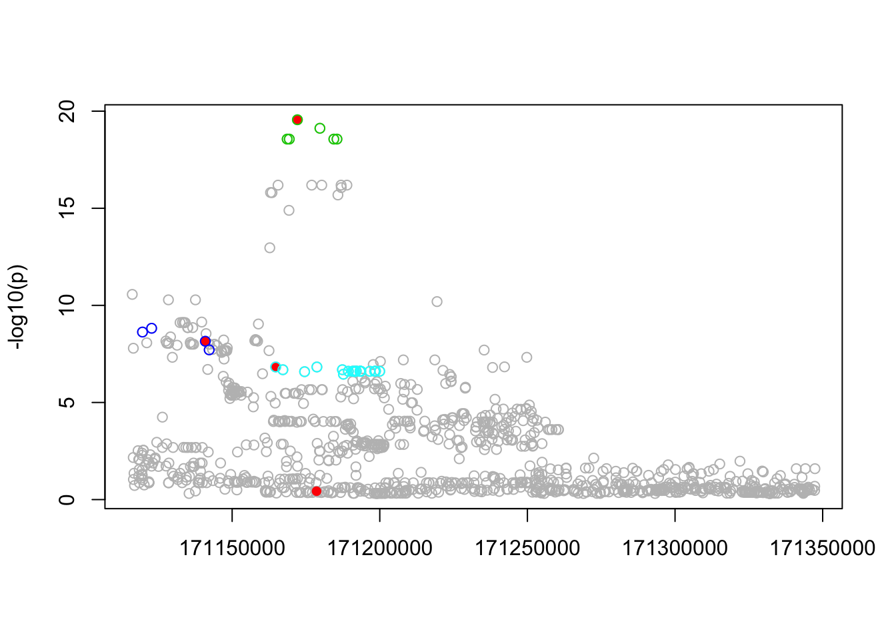
ci = list()
for(i in 1:5){ci[[i]] = which(in_CI_x(res.sim$alpha[i,])>0)}
pip.sim = colSums(res.sim$alpha)
plot(pip.sim)
which(b!=0)[1] 102 215 258 287points(which(b!=0),pip.sim[which(b!=0)],col=2,pch=16)
Compare with FINEMAP
The new VB method gives similar results to FINEMAP (with FINEMAP set to \(k=4\))
res.fm = read.table("../data/finemap_data/fmo2.sim/fmo2.sim.snp",header=TRUE,sep=" ")
pip.fm = rep(0,1000)
pip.fm[res.fm$index] = res.fm$snp_prob
res.fm.k4 = read.table("../data/finemap_data/fmo2.sim/fmo2.sim.k4.snp",header=TRUE,sep=" ")
pip.fm.k4 = rep(0,1000)
pip.fm.k4[res.fm.k4$index] = res.fm.k4$snp_prob
plot(pip.sim,pip.fm.k4,xlab="PIP (new VB method)",ylab="PIP (FINEMAP, k=4)", main="New VB vs FINEMAP with k=4")
points(pip.sim[which(b!=0)],pip.fm.k4[which(b!=0)],col=2,pch=16)
abline(a=0,b=1)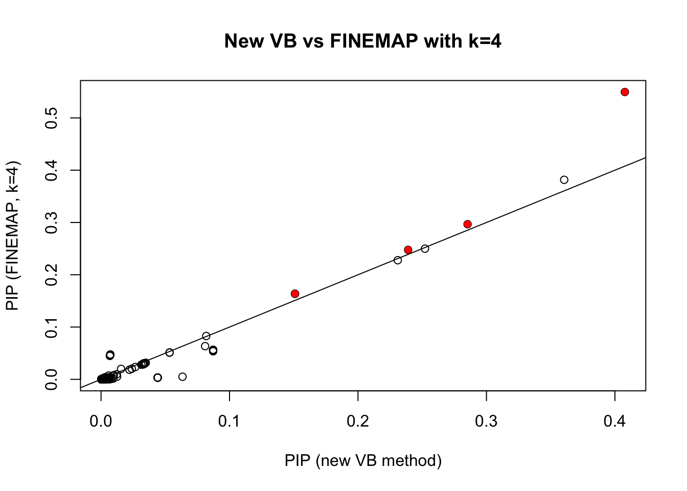
Now compare with DAP. William sent me two different DAP results, the first with default settings, and the second with the residual variance set to be equal to var(y), which is in some sense “conservatve”. It turns out the latter agrees really well with FINEMAP with default prior.
res.dap = read.table("../data/finemap_data/fmo2.sim/dap_out_snp.txt",stringsAsFactors = FALSE)
res.dap$snp = as.numeric(substr(res.dap$V2,4,6))
pip.dap = rep(0,1000)
pip.dap[res.dap$snp] = res.dap$V3
res.dap2 = read.table("../data/finemap_data/fmo2.sim/dap_out2_snp.txt",stringsAsFactors = FALSE)
res.dap2$snp = as.numeric(substr(res.dap2$V2,4,6))
pip.dap2 = rep(0,1000)
pip.dap2[res.dap2$snp] = res.dap2$V3
plot(pip.dap2,pip.fm,main ="DAP (conservative) vs FINEMAP (defaults)",xlab="DAP",ylab="FINEMAP")
points(pip.dap2[which(b!=0)],pip.fm[which(b!=0)],col=2,pch=16)
abline(a=0,b=1)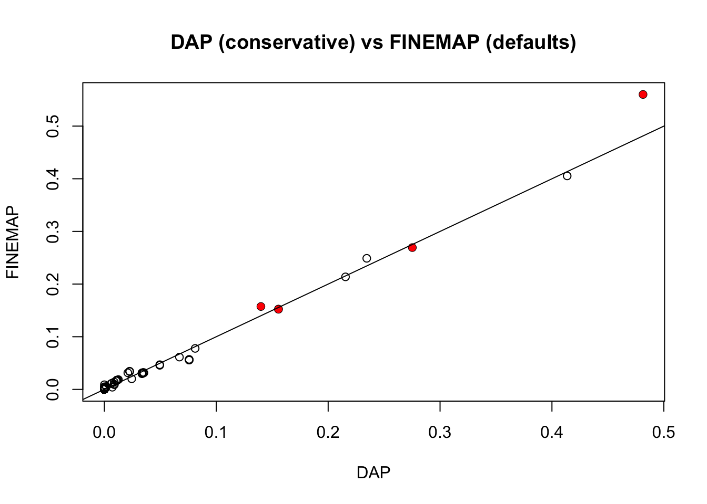
plot(pip.dap2,pip.dap,main ="DAP (conservative) vs DAP (defaults)",xlab="DAP (conservative)",ylab="DAP (default)")
points(pip.dap2[which(b!=0)],pip.dap[which(b!=0)],col=2,pch=16)
abline(a=0,b=1)
In contrast, Paintor results seem pretty different:
pip.p = read.table("~/PAINTOR_V3.0/myData/fmo2.sim.results",header=TRUE)[,2]
plot(pip.p,pip.sim)
points(pip.p[which(b!=0)],pip.sim[which(b!=0)],col=2,pch=16)
abline(a=0,b=1)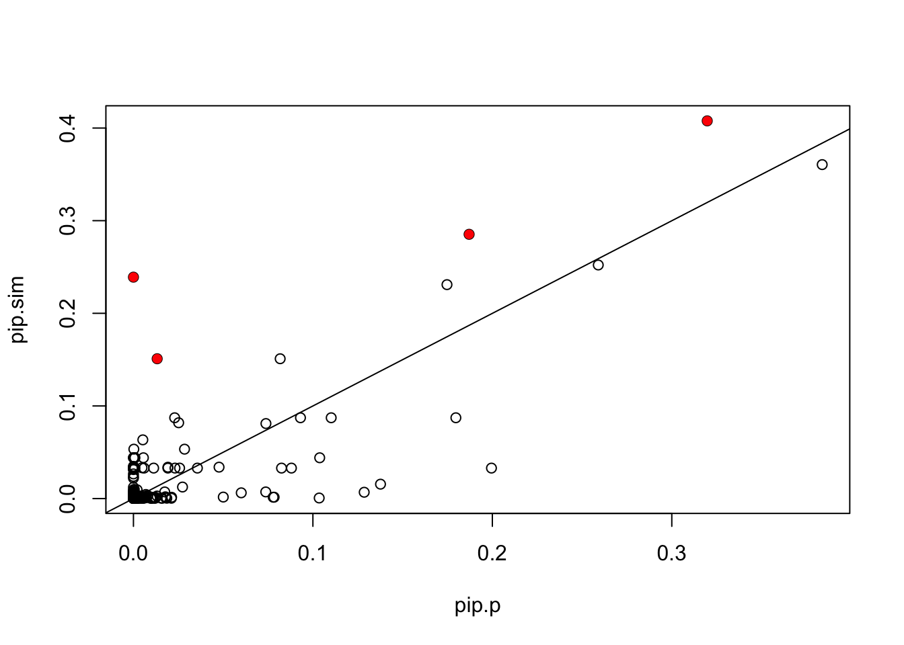
Compare log10BF. Note the top log10BF from finemap was 36.7 (for a 4 marker model). So similar, but not identical. (I haven’t been careful about making sure parameters are exactly same across methods.)
tophits = apply(res.sim$alpha,1,which.max)
markers = colnames(Xresid)[tophits]
log10BF(Xresid[,markers[1:3]],ysim,0.4) [,1]
[1,] 33.86796log10BF(Xresid[,markers[1:4]],ysim,0.4) [,1]
[1,] 37.13914Run on ACTN3 data
d=readRDS("../data/Muscle_Skeletal.ACTN3.pm1Mb.RDS")
storage.mode(d$X) <- "double"
#d$X <- d$X[,3501:4500]
X = d$X
y = d$y
Z = d$Z
Xresid= X
p =ncol(Xresid)
for(i in 1:p){Xresid[,i] = lm(X[,i]~Z)$resid}
yresid = lm(y~Z)$resid
res.actn3 =fit(Xresid,yresid,niter=100)
n_in_CI(res.actn3)[1] 3 3796 3796 3796 3796lfsr_fromfit(res.actn3)[1] 0.0000000 0.2952032 0.2952032 0.2952032 0.2952032pplot(Xresid,yresid,res.actn3)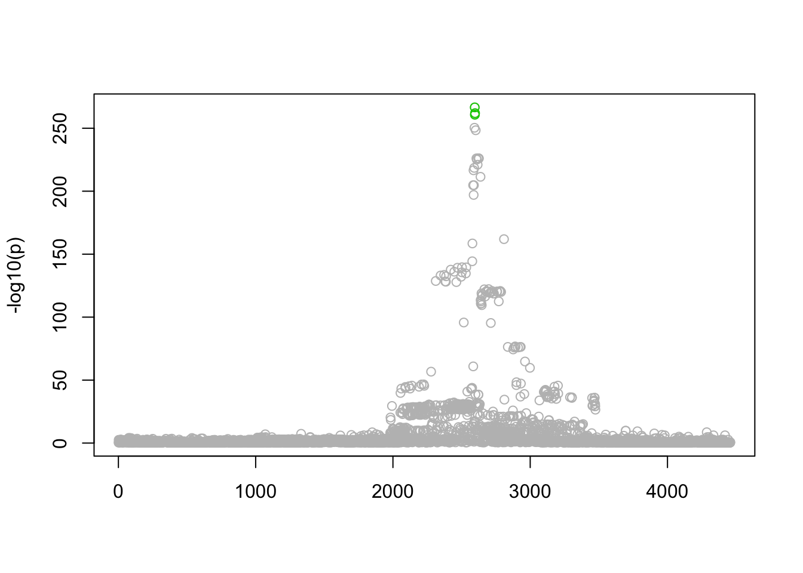
Session information
sessionInfo()R version 3.3.2 (2016-10-31)
Platform: x86_64-apple-darwin13.4.0 (64-bit)
Running under: OS X El Capitan 10.11.6
locale:
[1] en_US.UTF-8/en_US.UTF-8/en_US.UTF-8/C/en_US.UTF-8/en_US.UTF-8
attached base packages:
[1] stats graphics grDevices utils datasets methods base
loaded via a namespace (and not attached):
[1] backports_1.1.1 magrittr_1.5 rprojroot_1.2 tools_3.3.2
[5] htmltools_0.3.6 yaml_2.1.14 Rcpp_0.12.13 stringi_1.1.5
[9] rmarkdown_1.7 knitr_1.17 git2r_0.19.0 stringr_1.2.0
[13] digest_0.6.12 evaluate_0.10.1This R Markdown site was created with workflowr